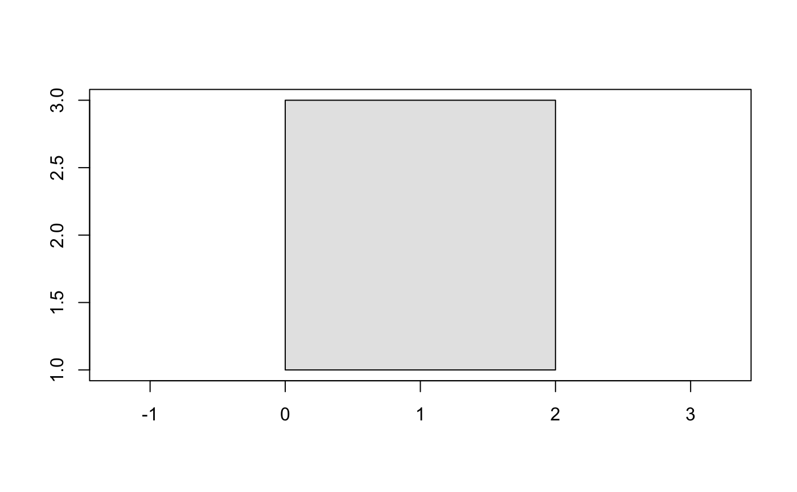

These functions are basic plot implementations for the geovctrs types.
Similar plot() methods are available for well-known types
in the wkutils package.
# S3 method for geovctrs_xy plot( x, ..., add = FALSE, asp = 1, bbox = geo_bbox(x, finite = TRUE), xlab = "", ylab = "" ) # S3 method for geovctrs_segment plot( x, ..., add = FALSE, asp = 1, bbox = geo_bbox(x, finite = TRUE), xlab = "", ylab = "" ) # S3 method for geovctrs_rect plot( x, ..., add = FALSE, asp = 1, bbox = geo_bbox(x, finite = TRUE), xlab = "", ylab = "" )
Arguments
| x | A geometry-like object, or one that can be
coerced to a geometry-like object using |
|---|---|
| ... | Passed to plotting functions for features: |
| add | Should the object be added the current plot? |
| asp, xlab, ylab | Passed to |
| bbox | The limits of the plot. Defaults to |
Value
x, invisibly.
Examples
